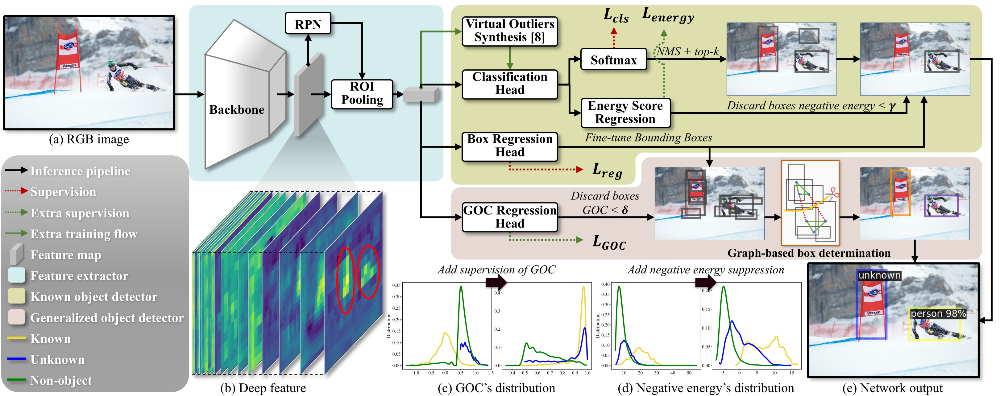
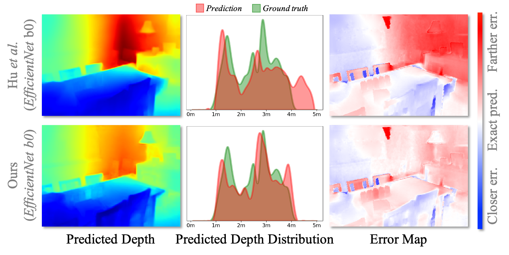
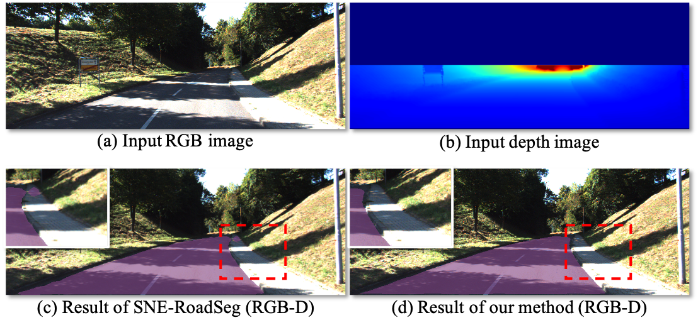
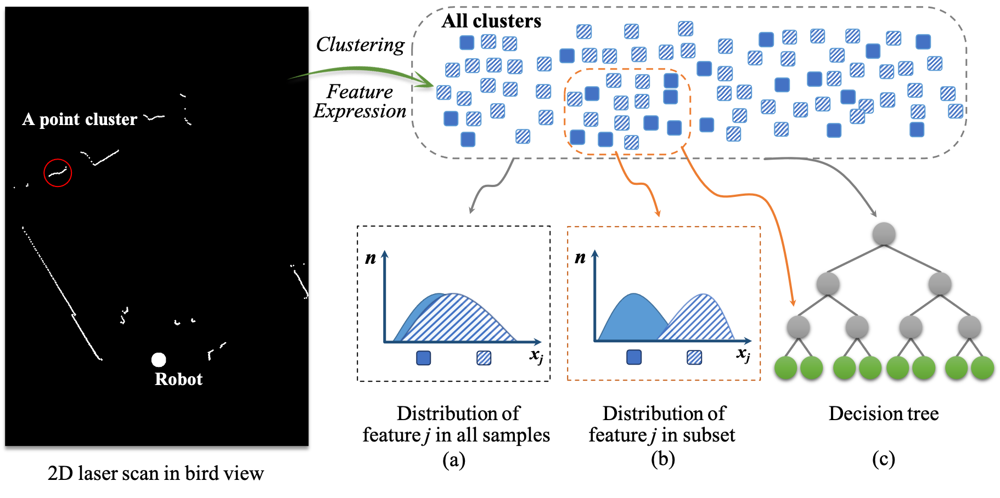

Feng Xue
 Ph.D candiadate
Ph.D candiadate
 Beijing, China
Beijing, China
 xuefeng@bupt.edu.cn
xuefeng@bupt.edu.cn
 Beijing University of Posts and Telecommunications
Beijing University of Posts and Telecommunications
 Educational Experience
Educational Experience
Ph.D Candidate
Beijing University of Posts and Telecommunications (BUPT)
Master Degree
Beijing University of Posts and Telecommunications (BUPT)
Bachelor Degree
Guilin University of Electronic Technology (GUET)
Experience
- Sep. 2016 - Jun. 2019, master’s degree on Computer Technology at Beijing university of posts and telecommunications, under super vision of Prof. Anlong Ming and Prof. YuZhou.
- Sep. 2019 - Now, Ph.D candidate on Computer Science and Technology at Beijing university of posts and telecommunications, under super vision of Prof. Anlong Ming.
- Sep. 2016 - Now, study in Laboratory of Visual Robot & Intelligent Technology.
Interests
Since 2017, I have been focusing on open-world visual perception using a monocular camera, which is applied to scenarios such as autonomous driving and robotics. To this end, during my master's study, I focused on perceiving tiny anomalous objects in autonomous driving scenarios using low-level visual primitives and mid-level visual representations. During my PhD study, I devoted to introducing the 3D scene structure and the scene context into the open-world visual perception by estimating metric depth and detecting the free space of autonomous driving.
Research
♦ denotes equal contribution
Visual Anomaly Detection / Open-world Object Detection

Unknown Sniffer for Object Detection: Don't Turn a Blind Eye to Unknown Objects
Wenteng Liang♦, Feng Xue♦, Yihao Liu, Guofeng Zhong, Anlong Ming
CVPR 2023
[ArXiv] [Paper] [Code] [Project Page] [Demo Video]

Tiny Obstacle Discovery by Occlusion-aware Multilayer Regression
Feng Xue, Anlong Ming, Yu Zhou
TIP 2020
[ArXiv] [Paper] [Code]

A Novel Multi-layer Framework for Tiny Obstacle Discovery
Feng Xue, Anlong Ming, Menghan Zhou, Yu Zhou
ICRA 2019
[ArXiv] [Paper] [Code of Matlab Imple.] [Code of Python/ROS Imple.] [Technical Report]
Monocular Metric Depth Estimation / Monocular 3D Reconstruction

Monocular Depth Distribution Alignment with Low Computation
Fei Sheng♦, Feng Xue♦, Wenteng Liang, Yichong Chang, Anlong Ming
ICRA 2022
[ArXiv] [Paper] [Code]

Boundary-induced and Scene-aggregated Network for Monocular Depth Prediction
Feng Xue♦, Junfeng Cao♦, Yu Zhou, Fei Sheng, Yankai Wang, Anlong Ming
PR 2021
[ArXiv] [Paper] [Code] [Technical Report]
Free Space Detection of Autonomous Driving

Fast Road Segmentation via Uncertainty-aware Symmetric Network
Yichong Chang♦, Feng Xue♦, Fei Sheng, Wenteng Liang, Anlong Ming
ICRA 2022
[ArXiv] [Paper] [Code]
Occlusion Relationship Reasoning

Occlusion-shared and Feature-separated Network for Occlusion Relationship Reasoning
Rui Lu, Feng Xue, Menghan Zhou, Anlong Ming, Yu Zhou
ICCV 2019
[ArXiv] [Paper] [Code]
Range Sensor based Perception
